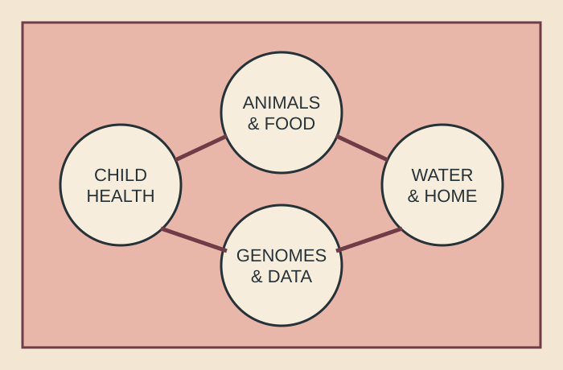

GETcampy
Genomic epidemiology of childhood enteric disease
One Health sampling and pathogen genomics across children, households, animals, food and environmental exposures.
Active outputsAfricaCampylobacter
Open projectProjects
The projects differ in geography and scale, but share a commitment to coordinated sampling, population-aware analysis and usable public-health outputs.

One Health sampling and pathogen genomics across children, households, animals, food and environmental exposures.

A collaborative platform connecting surveillance, genomics, source attribution, modelling, training and prevention.

Metagenomic analysis of how wildlife movement and human-influenced environments structure microbial communities and resistance.
Project architecture
Connected programmes
Population structure, disease association, antimicrobial resistance and poultry-linked emergence in the Peruvian Amazon.
Machine-learning attribution of human infections using genomic surveillance from food, livestock and wildlife reservoirs.
Genomic investigation of staphylococci, Acinetobacter and other pathogens where lineage and resistance influence outcomes.